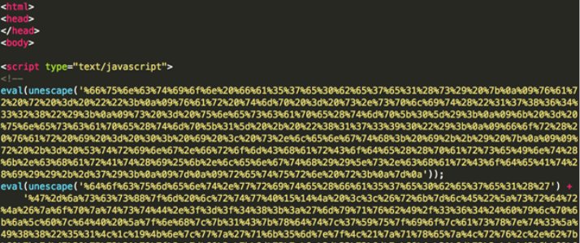

This method is among the more sophisticated phishing obfuscations we’ve observed. In this case, the initial landing is
essentially two chunks of data that are unescaped and eval’d

Decoding the first eval statement (hex decode) yields the brains of the decoding (Fig. 35):

While it doesn’t involve much code, this is a fairly sophisticated obfuscation method as far as phishing goes. The second
block of code decodes to eval the large chunk of data as the s variable in the above code.
The tmp variable becomes an array by splitting the data into two bits of information where “17864328” occurs in the
variable. tmp[0] holds the encoded data, while tmp[1] holds what will be used as a key for decoding.

The hex value of tmp[1] is appended by “817390” making the key for this instance a value of “4515988817390”.
The for loop starts off initiating a counter and will iterate over the length of the data, the first value being 47.
String.fromCharCode((parseInt(k.charAt(i%k.length))^s.charCodeAt(i))+-7);
s.charCodeAt(i) evaluates to the first byte in the s variable. In the first iteration, it will be 47 in hex which evaluates to 71 in decimal.
String.fromCharCode((parseInt(k.charAt(i%k.length))^s.charCodeAt(i))+-7);
Evaluating further, i%k.length for the first loop will be 0.
String.fromCharCode((parseInt(k.charAt(i%k.length))^s.charCodeAt(i))+-7);
Next, k.charAt(0) will evaluate to the first character in the key variable which is 4.
String.fromCharCode((parseInt(k.charAt(i%k.length))^s.charCodeAt(i))+-7);
This evaluates to essentially 4^71 which evaluates to 67.
String.fromCharCode((parseInt(k.charAt(i%k.length))^s.charCodeAt(i))+-7);
The next step just subtracts 7 from 67 and parses as an integer, so the result is 60.
String.fromCharCode((parseInt(k.charAt(i%k.length))^s.charCodeAt(i))+-7);
Finally, the expression converts 60 decimal to ascii, so we end up with “<”, which is saved in the r variable.
Subsequent loop values would look something like this:
String.fromCharCode((5^45)+-7) == !
String.fromCharCode((1^106)+-7) == d
String.fromCharCode((5^115)+-7) == o
...
The fully decoded value is then written to the page via document.write where we see normal html.